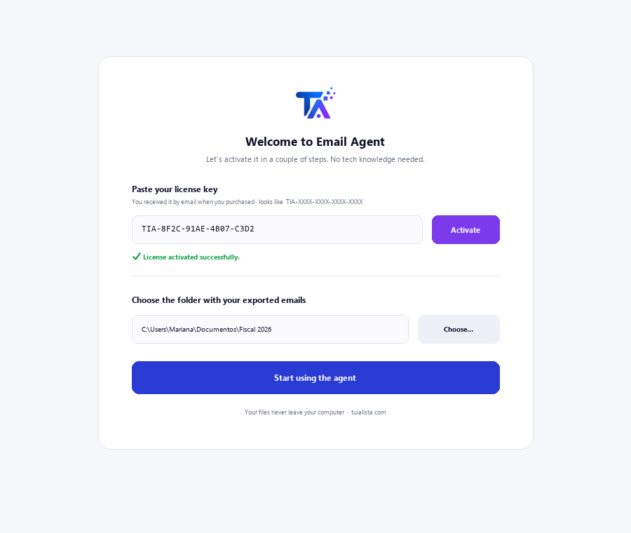
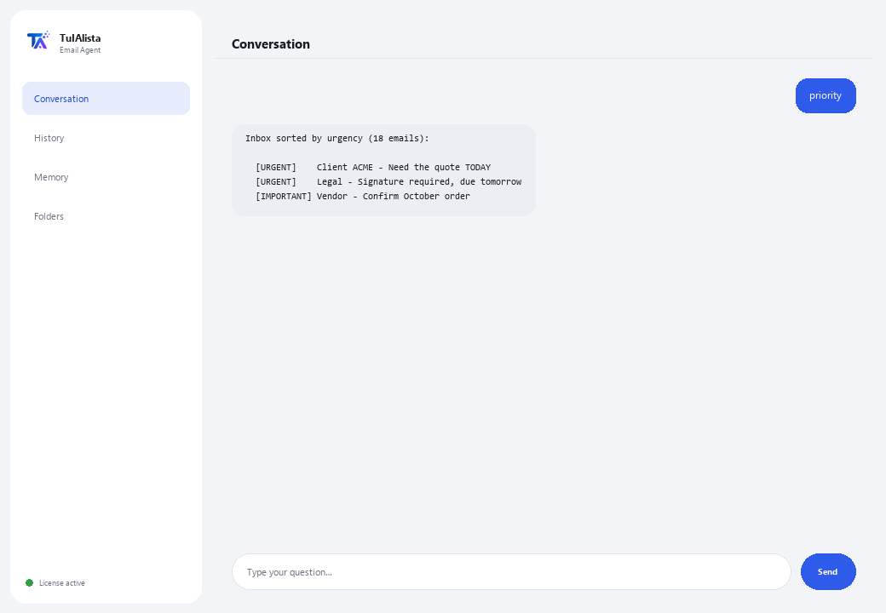

Email Agent
Sorts your inbox, tells you what's urgent, and drafts replies for you — processing everything on your computer.
What does it solve and what do you need?
Email is one of the biggest time drains in the day: dozens of messages where what's urgent gets mixed in with the noise. This agent turns that chaotic inbox into a clear action list — prioritized, with tasks extracted and drafts ready.
- You need: your license key (TIA-XXXX-XXXX-XXXX-XXXX) and the folder with your exported emails (.eml, .mbox, .txt or .csv). No Python, no technical knowledge.
- First result in under 5 minutes: install, activate, pick your folder, and run priority to see your inbox sorted by urgency.
- Your emails never leave your computer — the analysis runs locally.
soporte@tuialista.com or visit tuialista.com/soporte — we usually reply the same business day.1 What this agent does
You point it at the folder with your exported emails and it:
- Reads all of them (.eml, .mbox, .txt and .csv), with no connection to mail servers.
- Prioritizes each message: urgent, important, normal or low.
- Extracts the tasks being asked of you, who's asking and by when.
- Detects likely unanswered items.
- Drafts professional reply drafts in the language of the email.
- Groups by sender and searches within your emails.
- Answers your questions about the inbox: “what was I asked for with a deadline this week?”
The result: you stop wasting time on your inbox and act first on what actually matters.
2 Installation (2 minutes)
For Windows. No constant internet connection needed, and nothing gets uploaded to the cloud.
Download the installer from tuialista.com/descargar (Email agent) and open it. It creates a desktop shortcut with the logo — no Python or terminal needed.
Double-click the new icon. Paste your license key (you received it by email when you bought it) and click Activate. You'll see a green checkmark once it's valid.
Select the folder with your exported emails and click Start using the agent. Next time it starts right up — it remembers your key and your folder.

3 How to use it
The agent opens a chat window, like a messaging app — not a programmer's black screen. You type your command or question in the text box below, hit Send (or Enter), and the reply appears as a message, just like in this real image:

The commands below are the words you can type in that same text box:
> priorityYour inbox sorted by urgency: URGENT, IMPORTANT, NORMAL, LOW. Flags the ones with a deadline.
> summaryExecutive overview of the inbox: how many urgent/important, most frequent senders, and what to handle first.
> tasksEmails asking for an action, who's asking, the priority, and the deadline mentioned if there is one.
> reply <subject>A reply draft for the email you specify (by subject or number), in the language of the original, with blanks [IN BRACKETS] for you to fill in.
> unansweredEmails asking for action whose sender doesn't appear as a recipient of another email of yours — possibly unanswered.
> sendersGroups your emails by sender, sorted by volume.
> search <text>Searches for a word or phrase in the subject and body. E.g.: search invoice march.
> free-form question?Type any question in natural language, e.g.: what urgent emails do I have from this week?
> exitEnds the session (exit also works).
4 Common use examples
Start the day with what's urgent
priority — you see what's URGENT first, and what has a deadline.
Don't forget what you were asked for
tasks
Reply fast and well
reply project proposal — you get a professional draft ready to review and send.
Find what's still unanswered
unanswered
5 Frequently asked questions
Do my emails get uploaded to the internet?
Does it connect to my Gmail/Outlook account?
Do I need internet to use it?
How does it decide priority?
What language does it draft replies in?
How does it detect “unanswered” items?
Can I change the email folder?
Does it read attachments (PDF, Word)?
Does it modify or send emails?
Does it save history between sessions?
6 Troubleshooting
It shows “0 emails”
A .csv doesn't read well
It says “Invalid license” or asks to reconnect
“No AI providers configured”
None of these fixed your problem? Write to us directly — we'll gladly look into it with you.
soporte@tuialista.com or visit tuialista.com/soporte — we usually reply the same business day.7 Privacy and confidentiality
Your emails never leave your computer.
- The agent reads and processes the files locally, on your own machine. It doesn't connect to your mail server or upload your emails anywhere.
- Prioritization, task detection and grouping by sender all happen on your machine.
- The only thing that travels over the internet is: (1) a check that your license is active — which doesn't include your emails' content —, and (2) when requesting a summary, a draft, or a question, a fragment of the relevant emails is sent to the AI engine to draft the reply.